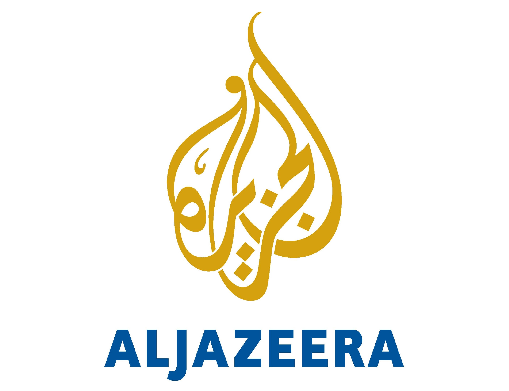
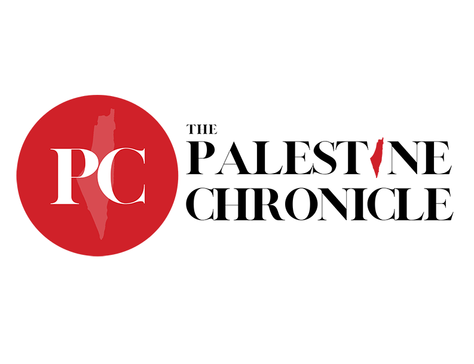

News on Palestine
We lack the resources for any live coverage or news articles, however to make the resources available and ensure people are informed below are a list of organizations with reliable reporting on Palestine, of which are reliable and lack bias towards Israel. It is important they lack bias towards Israel as to ensure the information is accurate towards how Palestinians are suffering. The perpetrator of a crime will not be honest about it, nor will the people who help him, so having pro-Palestinian voices and news sources is an essential. Each section's image will be a link to the website, alongside a text link to each website at the bottom of each section.
Al Jazeera
This is a solid news source for information about what is ongoing in Palestine. They tend to focus on more human stories, so some information will be lacking, however they do good coverage of these stories and you can get a proepre feeling for what is happening to the people of Palestine. It's bias is non-existent towards Israel, meaning your reporting from this source won't mince words or misuse information, and what is presented is accurate and fair towards the people of Palestine.
The Palestine Chronicle
The Palestine Chronicle is a news agency based in Palestine itself, and is probably the best source for information on the conflict. The perspective is a Palestinian one first and foremost, and more importantly coverage is comprehensive, and if something is happening they almost undoubtedly have covereage of it.
Reuters
And then the final source we can recommend is Reuters, which is perhaps the most unbiased a news source can get. Their focus is purely reporting, and focusing on the conflict as it develops. It may have less "human" stories compared to the Palestine Chronicle and Al Jazeera, though is a very reliable and highly respected news source that you can put in good faith for news on the conflict.